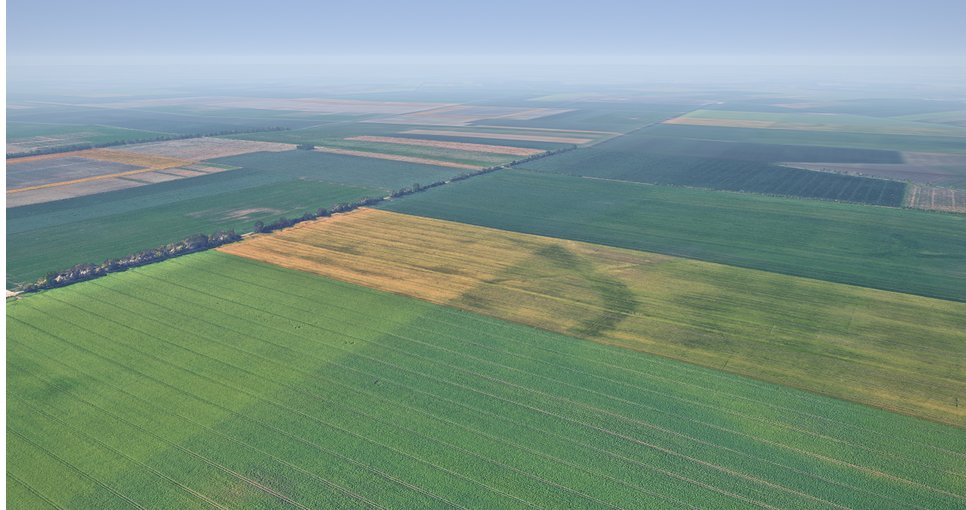

Getting a drone home when GPS is jammed, using its downward camera and the way it flew out.
William Peng · Holger Molin

~10 s. We built a way for a drone to fly home when GPS is jammed, using only the camera it already has and what it saw on the way out.
Replay
If it doesn't load, open cesium/?solo=1 directly.
~50 s. Keys: Space play/pause · T top-down · C chase/orbit · , . scrub · PageDown next slide.
Our system
Outbound it remembers what the ground looks like; on the way back it matches each frame to the breadcrumb it expects.
~45 s. Each downward frame is rectified using the flight controller's attitude and altitude: levelled, rotated north-up, scaled. A small frozen MobileNetV3 encoder turns it into a 14 by 14 grid of 16 numbers. On the way out, while GPS works, we save that grid every 20 m with its GPS position: a breadcrumb, about 3 KB. On the way back, the live grid is slid over the expected breadcrumb by up to 7 cells, a softmax picks the offset, and the model also says how sure it is, whether we've arrived, and whether this is no match at all. Breadcrumb position minus offset is a position fix; it goes into stock PX4 EKF2 like a visual-odometry camera, and the controller flies breadcrumb to breadcrumb home.
Live
If it doesn't load, open live/?mission=cx_001&start=jam directly.
~60 s. Same mission, same jam point. Now the model runs live in this browser on every frame and flies the drone home on its own fixes. Point at the live frame vs the breadcrumb, the offset arrow, and the estimate staying on the drone. It arrives home within a few metres.
Footprint · ours vs ORB-SLAM3
Model
vs ~450 MB vocabulary
1.1 M parameters, fp32Memory
vs 1.3 GB
model + inference, measuredMap per km
vs 9–47 MB
50 breadcrumbs × 6 KBORB-SLAM3 on the same Magdeburg missions (7 runs, peak RAM median; map from atlas saves). Ours: ONNX Runtime CPU, models + inference.
~30 s. Why not just run visual SLAM? On the same Magdeburg missions ORB-SLAM3 needs over a gigabyte of RAM, 9 to 47 MB of map per kilometre and more than a full desktop core, and it held position all the way home on only 3 of 7, never once recognising its outbound map. Ours: about 30 MB of memory, 0.3 MB per km of breadcrumbs, a few percent of one core, and 7 of 7 home within 5 m. And SLAM here was run in the most favourable setting, open loop on the true path.